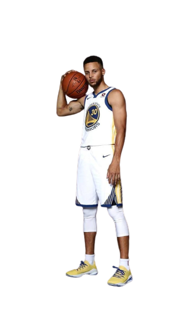
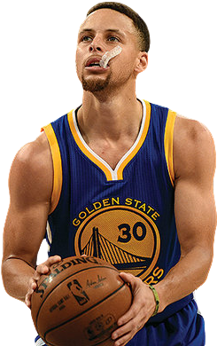
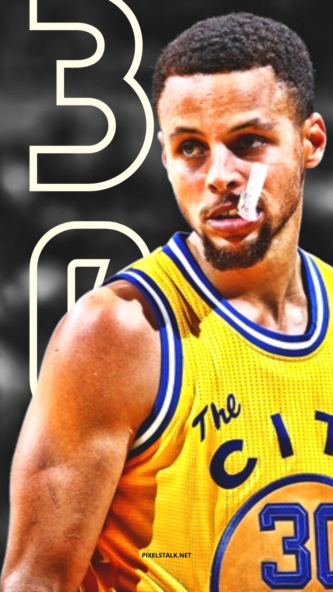

STEPH CURRY
Curry was born on March 14, 1988, in Akron, Ohio. The two-time NBA MVP was selected by the Warriors No. 7 overall in the 2009 NBA draft. Curry has gone on to become a four-time NBA champion and a nine-time NBA All-Star. The 6-foot-2, 185-pounder is also widely considered the NBA’s greatest shooter of all time and is the league’s career leader in 3-point field goals made.
Background
Wardell Stephen Curry II is an American professional
basketball player for the Golden State Warriors of the National Basketball Association.
Born: March 14, 1988 (age 35 years), Akron, Ohio, United States
Height: 1.88 m
Children: Riley Elizabeth Curry, Canon W. Jack Curry, Ryan Carson Curry
Spouse: Ayesha Curry (m. 2011)
Parents: Dell Curry, Sonya Curry
Siblings: Seth Curry, Sydel Curry
Current team: Golden State Warriors (#30 / Point guard)
Achievements
4× NBA champion: 2015, 2017, 2018, 2022.
NBA Finals MVP: 2022.
NBA Western Conference Finals MVP: 2022.
2× NBA Most Valuable Player Award: 2015, 2016.
NBA All-Star Game MVP: 2022.
9× NBA All-Star: 2014, 2015, 2016, 2017, 2018, 2019, 2021, 2022, 2023.
NBA 75th Anniversary Team: 2021.
8× All-NBA selection:
Developed by: POGITECH